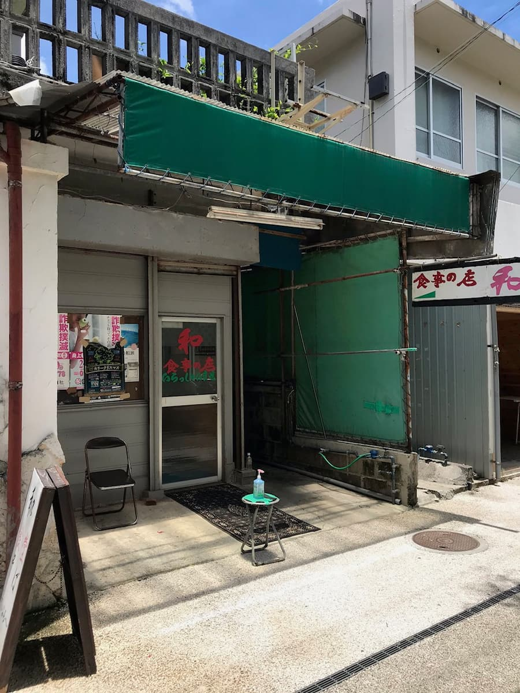
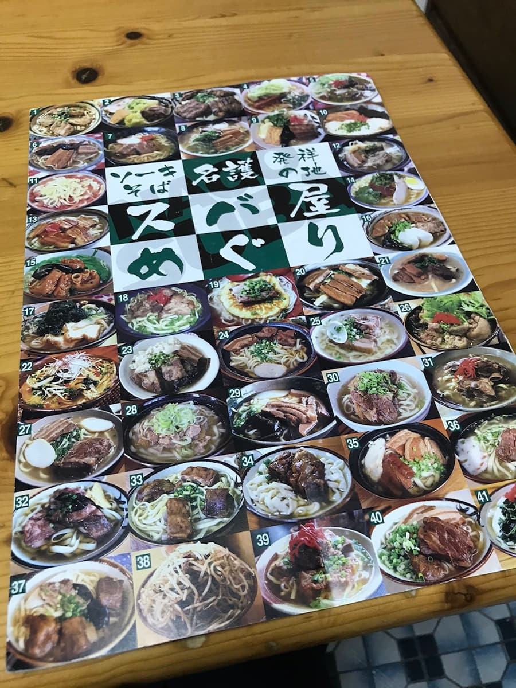
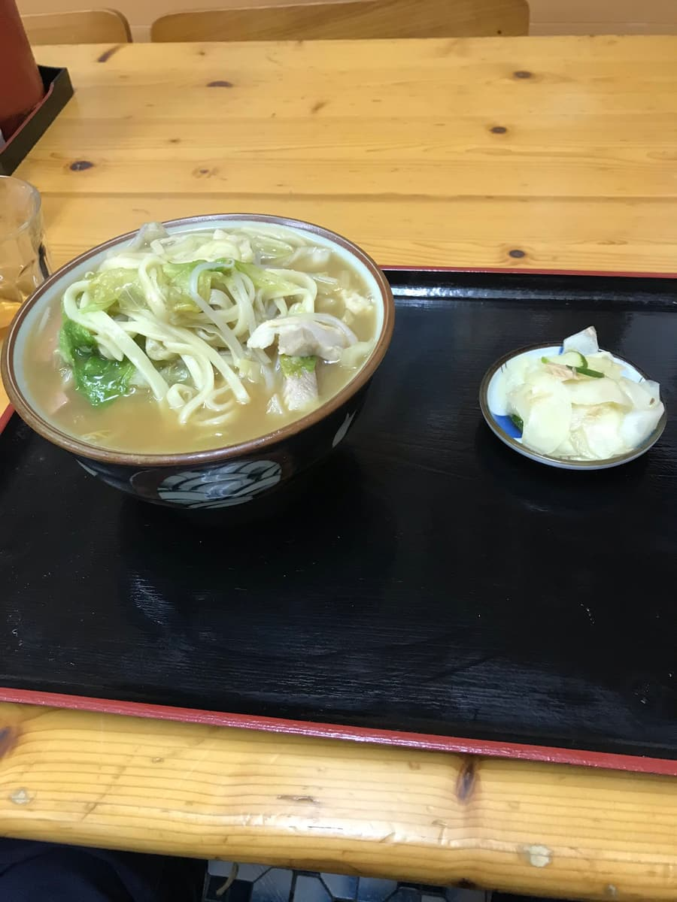
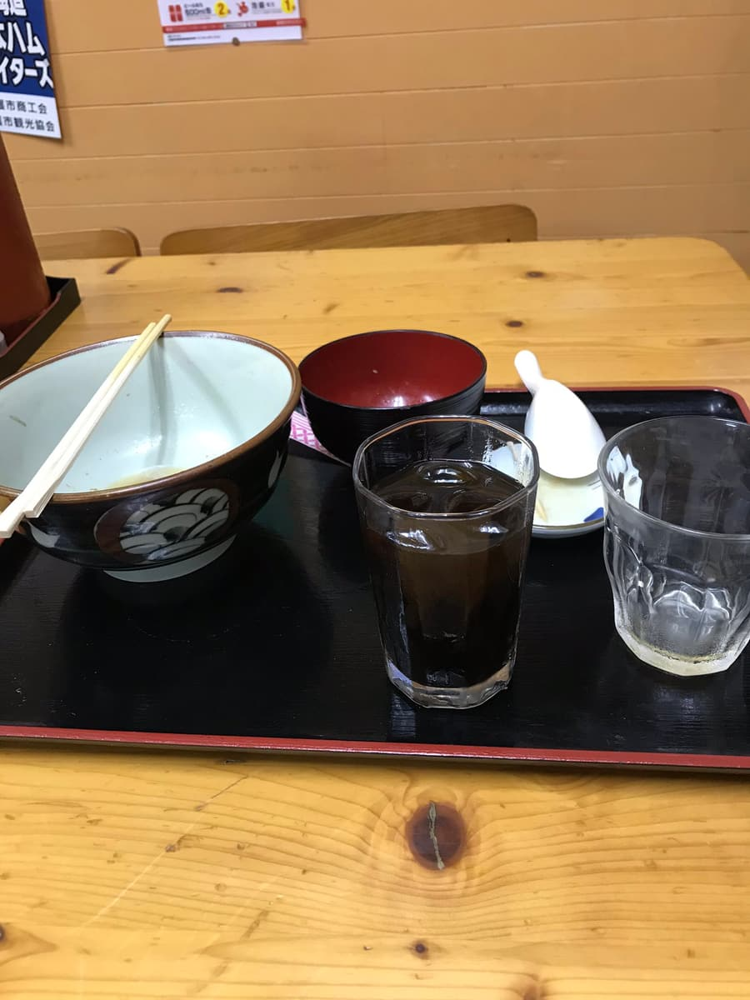

靠著「名護市沖繩麵地圖」找到了「食事の店 和（Kazu）」（2020年6月）。


這裡也點了沖繩麵地圖上附照片介紹的「味噌麵」

外觀看起來像是味噌湯裡加了沖繩麵，但沒想到味噌湯的味道很淡，是清爽系的^^; 份量滿點。
麵是偏軟的扁麵，味噌湯和沖繩麵很搭，但個人覺得既然叫這個名字，希望味噌味能更濃一點。
以為吃完了，突然飯後招待了加糖漿的甜咖啡笑 沖繩麵配甜咖啡的組合還是第一次體驗ｗｗ

評分（9分/15分）：雖然算是普通好吃，但湯頭希望能再多點味噌感呢。
PS：以為店家沒有停車場，就停在周邊的投幣式停車場，但名護市營市場內有一定數量的免費停車位，請注意。請先確認場內停車場有沒有空位。
麵：★★★☆☆（3）
湯頭：★★★☆☆（3）
配料：★★★☆☆（3）